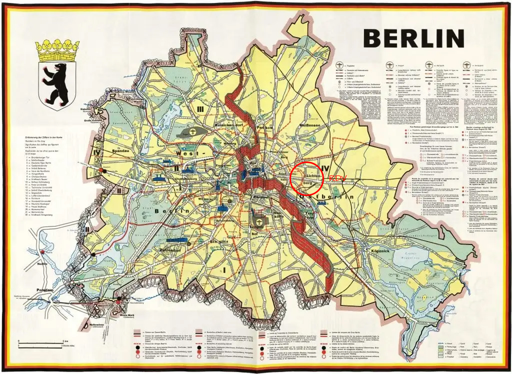

OFF
ON


ATTENTION : expérience uniquement disponible sur ordinateur.
> INITIALIZING KERNEL...
> MOUNTING VIRTUAL DRIVES...
> LOADING NEURAL NETWORKS... OK
> CHECKING SECURITY PROTOCOLS... BYPASSED
> DECRYPTING MISSION FILES...
> CONNECTION ESTABLISHED.

Nous avons eu la surprise du contact d'un certain agent du nom de "Seven", de sa présentation. Il refuse de dénoncer son vrai nom pour l'instant, mais il nous fait part de plusieurs choses intéressantes, notamment qu'il vient de l'Ouest et qu'il fait partie d'une Task Force classifiée, qui s'occupe de la recherche et le développement d'une arme secrète utilisant l'élément 74. N'aimant pas le mode de vie de l'Ouest, il souhaite nous prêter allégance. Si ce qu'il dit est véridique, il pourrait être un atout considérable à l'ascension de l'Est.
Nous avons eu la surprise du contact d'un certain agent du nom de "Seven", de sa présentation. Il refuse de dénoncer son vrai nom pour l'instant, mais il nous fait part de plusieurs choses intéressantes, notamment qu'il vient de l'Ouest et qu'il fait partie d'une Task Force classifiée, qui s'occupe de la recherche et le développement d'une arme secrète utilisant l'élément 74. N'aimant pas le mode de vie de l'Ouest, il souhaite nous prêter allégance. Si ce qu'il dit est véridique, il pourrait être un atout considérable à l'ascension de l'Est.